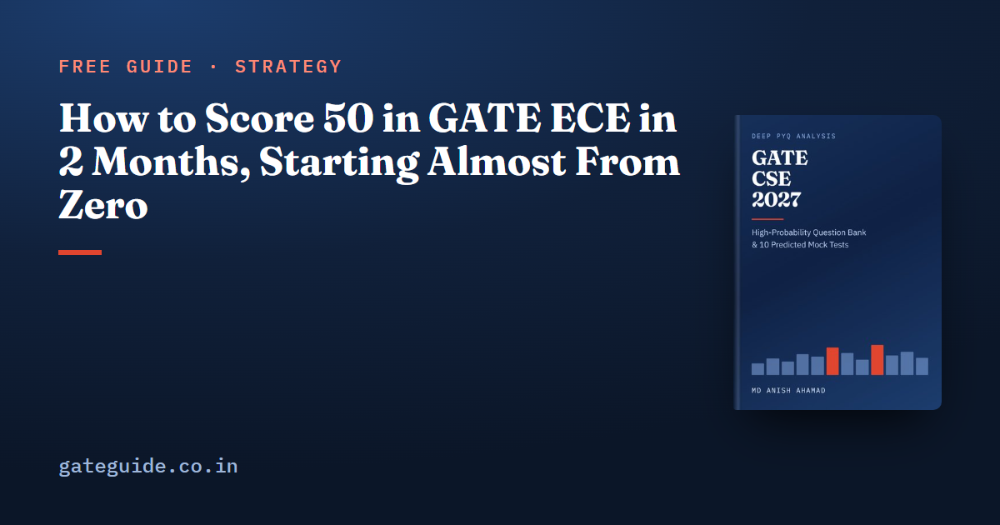

How to Score 50 in GATE ECE in 2 Months: A Marks Plan From Near Zero

If you have eight weeks and most of the GATE ECE syllabus is still unopened, 50 marks is a stretch target, not a safe one. This guide shows the arithmetic honestly, using marks counted question by question from five EC papers (2010, 2019, 2020, 2025 and 2026), and gives an eight-week first-pass plan built to give that target its best chance.
In this guide
This is a different job from revising in the last two months. A candidate who has studied once needs to consolidate, and the GATE ECE last 2 months strategy gives that candidate a week-by-week revision schedule. You need to learn the heavy, recurring material once, well enough to use under a clock, and to leave a great deal out on purpose.
Key takeaways
- On an average counted paper, the shares below reach about 50.4 marks. Across the five counted papers the same shares give 48.3 to 51.8. There is no margin.
- The plan needs about 225 hours: roughly 4.7 hours a day, six days a week, for eight weeks. With less, lower the target rather than skipping the recurring concepts.
- Weeks 1–4 are for the 17 concepts found in four or five counted papers, taken from the three heaviest sections in parallel. The first mock comes at the end of week 4.
- Depth goes to General Aptitude and the four heaviest technical sections. Electronic Devices and Electromagnetics get a short pass on their standard forms, not zero.
- Fifty is a planning target, not a qualifying mark. Qualifying marks are published with the result, so check the result notification.
The arithmetic behind 50
Each section's mean comes from the five counted papers. The target share is judgement: what a first pass, done well, can realistically secure after negative marking. It is set higher on General Aptitude and the large sections because that is where the plan's hours go.
| Section | Mean marks (5 papers) | Target share (judgement) | Expected marks |
|---|---|---|---|
| General Aptitude | 15.0 | 75% | 11.3 |
| Networks, Signals and Systems | 17.0 | 60% | 10.2 |
| Engineering Mathematics | 12.0 | 60% | 7.2 |
| Analog Circuits | 10.8 | 50% | 5.4 |
| Communications | 10.0 | 50% | 5.0 |
| Digital Circuits | 9.8 | 50% | 4.9 |
| Control Systems | 8.0 | 35% | 2.8 |
| Electronic Devices | 8.8 | 25% | 2.2 |
| Electromagnetics | 7.4 | 20% | 1.5 |
| Total | 50.4 (rows rounded) |
Apply the same shares to each counted paper's real section marks and you get 48.3 for 2010, 49.7 for 2019, 51.0 for 2020, 51.5 for 2025 and 51.8 for 2026. Two of the five fall short. That is the honest position: this plan puts 50 within reach and nothing more.
The table also shows where an extra mark is cheapest. Ten more percentage points of General Aptitude is 1.5 marks; of Networks, 1.7; of Engineering Mathematics, 1.2. Ten points of Electromagnetics is 0.7. When a week runs long, protect the top rows first.
What has to be true for this to work
- About 225 hours. The book's eight-week plan costs about 245 hours with ten mocks, 5.1 hours a day over 48 working days. Cutting to six mocks returns it to about 225 hours and 4.7 hours a day. This guide uses the six-mock version.
- The 17 recurring concepts done by the end of week 4. The book's check is to write each one's standard form and solve one question on it in under four minutes, from blank paper, and get at least 14 of the 17.
- No section at zero. On the counted record no technical section fell below 6 marks.
If the hours are not there, keep the structure and lower the target. Cutting the recurring concepts to protect the target is the one change that makes it less likely.
The eight weeks
| Weeks | What gets studied | Mocks |
|---|---|---|
| 1–4 | All 17 recurring concepts, taking Networks, Engineering Mathematics and Analog Circuits in parallel from day one, then Communications. The first three-paper concepts in those sections. General Aptitude every day | 1, on the last day of week 4 |
| 5–6 | The remaining three-paper concepts. Digital Circuits and Control Systems, starting with their recurring concepts | 2 |
| 7 | Electronic Devices and Electromagnetics at standard-form depth. One-line notes on the two-paper concepts | 1 |
| 8 | A small budget for the 2027 additions. Repair from the mock keys. The last mock, with nothing after it | 2 |
The concepts themselves, with the counted questions behind each, are listed in the GATE ECE important topics guide. Networks alone holds six of the 17. Engineering Mathematics has one, multiple integrals, but it is the most evenly spread section in the paper, so a thin pass over all six of its areas beats a deep pass over two.
Why the heaviest three go in parallel
Networks, Engineering Mathematics and Analog Circuits together came to between 36 and 41 marks in every counted paper, while the order inside the block changed. In 2026 Networks took 20 and Engineering Mathematics 9; in 2025 it was Engineering Mathematics 15 and Networks 13. Studying one to the end before starting the next is a bet on an order the evidence does not support. The year-by-year figures are in the subject-wise weightage guide.
The small sections, cheaply
Electronic Devices and Electromagnetics contain none of the 17 most recurrent concepts, which is why they come last and get the lowest target shares. They still get a pass. In Electromagnetics, the book counts six recurring question forms that cover 33 of the section's 37 counted marks across the five papers: the rectangular waveguide cutoff, the reflection coefficient and what follows from it, Maxwell's integral laws on simple shapes, S-parameters, the mapping between reflection coefficient and impedance, and the Friis equation with radiation resistance. That is a weekend, not a fortnight.
What to leave out on purpose
- Nonlinear first-order differential equations. Deleted from the 2027 syllabus. 2019 Q12 and 2020 Q37 were counted questions on it; in 2027 it is off the list.
- The long tail of rarely asked lines. Topics named in the syllabus but absent from all five counted papers get a few hours at most, in week 8.
- Derivations you will not be asked to reproduce. From a low base, learn the standard form and when to use it; the derivation can wait.
Three habits worth marks from the first mock
- Zero blank numerical-answer and multiple-select questions. Neither carries negative marking. The 2025 paper had 26 such questions and the 2026 paper 23.
- Spend time on the 2-mark questions. Thirty-five of the 65 questions carry 70 of the 100 marks, so rushing them to reach the 1-mark ones is the wrong trade.
- Use the calculator as you will in the hall. Practise on the on-screen version from week 1; the virtual calculator guide covers the slips that cost time.
General Aptitude deserves its daily slot from the first day, for the reason in the table: 15 marks in every counted paper, all multiple choice, and the highest target share in this plan. The General Aptitude guide covers the question types. Once you have a score, how the GATE score is calculated explains what it becomes.
The ECE book has the eight-week plan with its checkpoints, the 78 recurring concepts ranked, 925 questions with worked solutions and ten full-length mock tests. Its mocks are built to the counted shape of the paper but have not been sat as an exam, so they show you where you are thin rather than predicting a GATE score.
Frequently asked questions
How many marks should each GATE ECE section give to reach 50?
On an average counted paper, this plan's target shares give about 11.3 marks from General Aptitude, 10.2 from Networks, Signals and Systems, 7.2 from Engineering Mathematics, 5.4 from Analog Circuits, 5.0 from Communications, 4.9 from Digital Circuits, 2.8 from Control Systems, 2.2 from Electronic Devices and 1.5 from Electromagnetics: 50.4 in all before the rows are rounded. The shares are judgement, and on two of the five counted papers the same shares fall short of 50.
Can I score 50 in GATE ECE in 2 months from scratch?
It is possible but not comfortable. The arithmetic in this guide reaches about 50 on an average counted paper, and between 48 and 52 across the five counted papers, which means no margin at all. It also assumes around five hours of study a day, six days a week, for eight weeks. Nobody can promise the result, and the plan says so.
How many hours a day do I need for GATE ECE in 2 months?
The book's eight-week plan budgets about 245 hours with ten mock tests, which is 5.1 hours a day over 48 working days. With six mocks instead it is about 225 hours, or 4.7 hours a day. Below roughly four hours a day, a first pass over all eight technical sections does not fit into eight weeks.
Which GATE ECE subjects should I study first with 2 months left?
General Aptitude from day one, and Networks, Signals and Systems, Engineering Mathematics and Analog Circuits in parallel for the first four weeks, followed by Communications. Those four technical sections carry 49.8 mean marks across the five counted papers and hold 14 of the 17 concepts found in four or five of them.
Should I skip any subject in GATE ECE if I only have 2 months?
Skip depth, not sections. Electronic Devices and Electromagnetics contain none of the most recurrent concepts, so they get a short pass on their standard forms. But no counted paper gave any technical section fewer than 6 marks, and a quarter of a small section is a cheap mark or two on a target with no margin.
When should I take my first mock test with 2 months to go?
At the end of week four, once the four heaviest sections have had a first pass. Before that a mock mostly measures material you have not opened. After it, sit one roughly every week and a half, and keep a two-hour review after every sitting. Six reviewed mocks teach more than ten unreviewed ones.
Sources
- GATE 2027 official website (IIT Madras)
- GATE 2026 EC question paper (IIT Guwahati)
- GATE 2026 EC answer key (IIT Guwahati)
- GATE 2025 EC question paper (IIT Roorkee)
- GATE 2020 EC question paper with answer key (IIT Delhi)
- GATE 2019 EC question paper with answer key (IIT Madras)
Dates, fees and the syllabus are set by the GATE 2027 organising institute and can change. Always confirm at gate2027.iitm.ac.in.